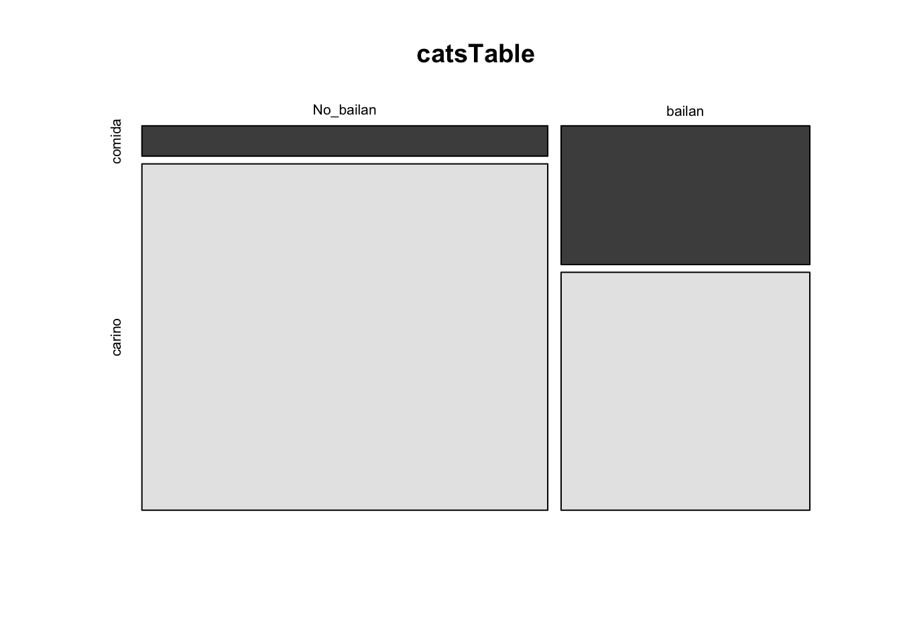
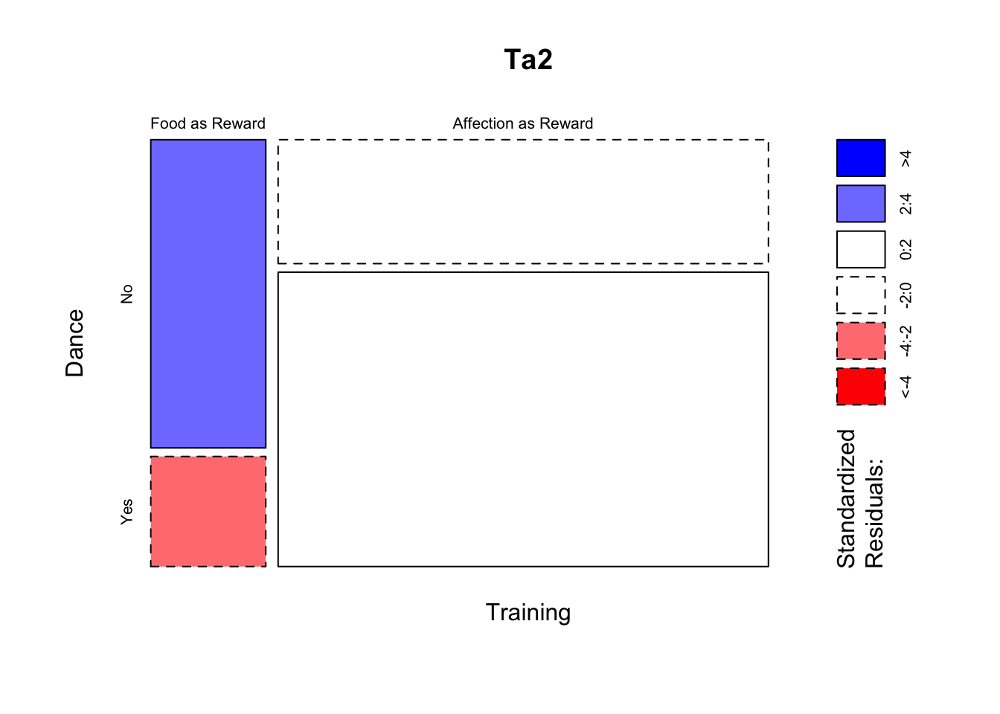
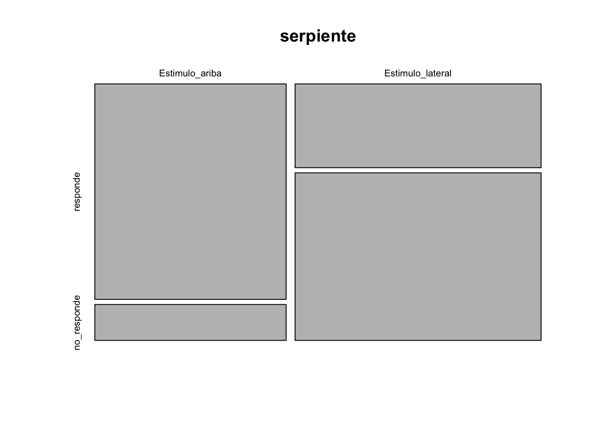

Chapter 11 Estadística Frecuentista
11.1 Bondad de ajuste y Table de Contingencia
Este tipo de prueba es frecuentemente conocido erróneamente como la prueba de Chi cuadrado. Los tipos de datos necesarios son distintos a las pruebas anteriores. En las pruebas que en los próximos módulos siempre habrá por lo menos una variable donde la unidad era el número de individuos, el largo o ancho en una unidad (cm, metro, celsius, etc) o sea una variable continua. Ahora para la pruebas de Bondad de ajuste y Tabla de Contingencia se contabiliza el número de eventos por categoría. En otra palabra es la frecuencia que ocurre un evento.
En esta sección no estamos interesado en evaluar los valores con datos que son continuos como la altura o el tamaño. Las variables que se usa son variables categóricas, o sea los valores son la frecuencia de un evento (o la ausencia de un evento).
Los datos tienen que caer exactamente en una categoría, por ejemplo
- vivo o muerto.
- presente o ausente.
- blanco, rojo, verde, azul.
- estar embarazada o no.
- Tiene el fenotipo dominante o recesivo.
- En una herencia mendeliana, los individuos son homocigóticos recesivo, dominantes o heterocigóticos.
11.2 Qué son supuestos
Cuando hablamos de supuestos estamos hablando de las condiciones necesarias para que la prueba sea utilizada. El incumplimiento de los supuestos resulta en que el los resultados de la prueba tenga un nivel de tipo de error I y tipo de error II más grande que los especificado (por ejemplo si selecciona un \(\alpha\) de 0.05, el error seria más grande). Si se usa datos usa datos erróneos puede ser que la prueba sea completamente invalida.
11.3 Los supuestos de las pruebas de frecuencias.
- Los datos son frecuencias.
- Las frecuencias son mutuamente exclusivas (no caen en múltiples categorías).
- Las observaciones son independiente una de la otra.
- Cada categoría tiene una frecuencia esperada suficiente grande:
- ninguna de las frecuencia esperada sea menor de 5 cuando hay 4 o menos categorías
- no más de 20% de las categorías que tengan un valor esperado de < 5 cuando hay más de 5 categorías y ninguna tiene un valor esperado menor de 1.
11.4 Instalar y activar los siguientes packages
#----Instalar los paquetes si es necesario-----
#install.packages("gmodels")
#install.packages("MASS")
if (!require("pacman")) install.packages("pacman")
pacman::p_load(gmodels, MASS, gt)
#------Activar los paquetes-----
library(gmodels) ## Análisis de datos de frecuencia
library(MASS) ## graficar los datos con la función "mosaicpLot"
library(gt) ## "Grammer of Tables", tablas más bonitas11.5 Gregory Mendel y sus guisantes
Gregory Mendel (1822-1884) el padre de herencia “mendeliana” estaba interesada en determinar como se hereda las características de los organismos. En clases de biología y genética uno de los primeros ejemplos de herencia mendeliana es evaluar si cumple con lo que Mendel sugerió que es la razón de herencia. Si un fenotipo es heredado por un mecanismo sencillo de un gen con solamente dos alelos donde uno de los alelos es dominante y el otro es recesivo entonces hay solamente dos fenotipos posible. Por consecuencia lo más básico es determinar si la frecuencia de los fenotipos en una población sigue una razón mendeliana de 3:1, en otra palabra por cada 3 individuos de un fenotipo “x” hay un individuo del fenotipo “y”.
Los datos que estaremos usando provenien directamente de los trabajos de Mendel. Aquí esta la publicación original en aleman y la referencia a la traducción en ingles.
Mendel, J.G. (1866). “Versuche über Pflanzenhybriden”, Verhandlungen des naturforschenden Vereines in Brünn, Bd. IV für das Jahr, 1865, Abhandlungen: 3–47, [1]. For the English translation, see: Druery, C.T.; Bateson, William (1901). “Experiments in plant hybridization” (PDF). Journal of the Royal Horticultural Society. 26: 1–32.
Tabla de los resultados de experimentos original de Gregor Mendel con semillas redondas y arrugadas. Cada uno represente un experimento y la cantidad de guisantes redondos o arrugadas.
| Plantas | redonda | arrugada |
|---|---|---|
| 1 | 45 | 12 |
| 2 | 27 | 8 |
| 3 | 24 | 7 |
| 4 | 19 | 10 |
| 5 | 32 | 11 |
| 6 | 26 | 6 |
| 7 | 88 | 24 |
| 8 | 22 | 10 |
| 9 | 28 | 6 |
| 10 | 25 | 7 |
| Total | 336 | 101 |
En la pagina número 10 del articulo observamos los resultados de diferentes experimentos. En el experimento 1, la Planta #1, produjo un total de 57 semillas donde 45 eran redonda y 12 eran arrugadas. Si lo que esperamos es una razón de 3:1, los que se se espera es que 0.75:0.25 que seria las proporciones esperada. Creamos un vector de datos de los valores observados (obs) y un vector de datos para la proporción esperada (esp).
11.6 Bondad de Ajuste.
La prueba de bondad de ajuste y de tabla de contingencia son pruebas que evalúa la cantidad/frecuencia en las categorías y lo compara con un modelo nulo. En este caso lo que se compará es la cantidad de la frecuencia observada \(o\), con la frecuencia esperada \(e\). La formula es la siguiente
\[\chi^2=\sum_{n=i}^n\frac{\left(o-e\right)^2}{e}\]
Usamos un ejemplo sencillo de los datos de Mendel haciendo los cálculos a mano de una proporción 3:1 de herencia de los fenotipos redonda:arrugada. Los datos son de la primer linea de uno de los experimentos que hizo Mendel.
## [1] 42.75## [1] 14.25library(knitr)
library(kableExtra)
df <- data.frame(Calculos = c("Observado","Esperado", "(o-e)", "(o-e)^2", "$$\\frac{(o-e)^2}{e}$$", "$$\\chi_{total}^2$$"),
Redonda = c(45, 42.75, 2.25,5.0625, 0.1184, ""),
Arrugada = c(12,14.25, -2.25,5.0625 ,0.3553, ""),
Total = c("","","","","",0.4737))
kable(df, escape=FALSE)| Calculos | Redonda | Arrugada | Total |
|---|---|---|---|
| Observado | 45 | 12 | |
| Esperado | 42.75 | 14.25 | |
| (o-e) | 2.25 | -2.25 | |
| (o-e)^2 | 5.0625 | 5.0625 | |
| \[\frac{(o-e)^2}{e}\] | 0.1184 | 0.3553 | |
| \[\chi_{total}^2\] | 0.4737 |
Los pasos para calcular el Chi Cuadrado:
- Los valores esperados, en este caso fue una proporción de 3:1
- Las diferencias
- Cuadrar las diferencias
- División por el valor esperado (da los Chi Square parcial)
- Sumar los valores en #4.
- buscar en una tabla de Chi Square el valor critico de Chi Square para la cantidad de grupos menos 1 y el \(\alpha\) correspondiente. En este caso se busca un \(\alpha\) de 0.05 y el grado de libertad (n-1) = 2-1, n es el número de grupos.
Para determinar si es significado el valor de Chi Square observado se compara con el valor critico (de la tabla). Aquí usamos R para conseguir este valor. Note aquí se usa (1-0.05= 0.95) y el grado de libertad que es 1. Ahora se compara ese valor con 0.4737, Si el valor observado es menor que el valor 3.841459 se acepta la hipótesis nula. En este caso no hay evidencia que los fenotipos se hereden diferente a 3:1.
## [1] 3.841459No hay ninguna razón de hacer los cálculos a mano si tenemos a R para hacerlo. Nota aquí se hace la misma prueba con los mismos datos y tenemos el mismo resultado.
11.7 Primer ejemplo
Lo que uno observa es el valor de la prueba de Bondad de ajuste tiene un Chi Cuadrado de 0.48, p =.49. Como el valor de p es mayor a 0.05, no se rechaza la hipótesis nula y que la frecuencia no es diferente de una proporción de 3:1.
obs<-c(45,12) # los valores observado
esp<-c(0.75,0.25) # este el modelo nulo
chisq.test(x=obs, p=esp)##
## Chi-squared test for given probabilities
##
## data: obs
## X-squared = 0.47368, df = 1, p-value = 0.4913# Cuando el valor de p es mayor a 0.05 se acepta la hipotesis nula
# Es el caso presente que la la herencia es de 3:111.8 Segundo ejemplo
Ahora evaluamos si la frecuencia de semillas redondas:arrugadas de todo el experimento sigue un patrón de 3:1. Se observa un Chi cuadrado de 0.83 y un valor de p=0.36, otra vez el valor es por encima de 0.05, y se concluye que la frecuencia de semillas redondas:redondas no es distintas a 3:1. Se acepta la hipotesis nula.
Vemos que a re-evaluar los experimentos de G. Mendel tenemos un resultado que apoya su predicciones. Nota que G. Mendel NO tenia pruebas estadísticas para determinar si las frecuencias eran diferente o no de 3:1. El hizo observaciones y llego a unas conclusiones. Se acuerda cuando fue desarrollado este método y por quien?
##
## Chi-squared test for given probabilities
##
## data: obs
## X-squared = 0.83066, df = 1, p-value = 0.3621##
## Chi-squared test for given probabilities
##
## data: obs
## X-squared = 4.5455, df = 1, p-value = 0.0330111.8.1 Esta ejercicio cumple con los supuestos?
Ejercicio: Cien pajaritos recibieron semillas de girasol con rayas negras o semillas negras. Setenta y cinco eligieron semillas negras. ¿Podemos concluir que la población de la que se tomó esta muestra tiene preferencia por las semillas de girasol negras sobre las semillas de girasol rayadas? (traducido del extracto 7.1 de Havel et al.).
- ¿Cual es la hipótesis nula?
- ¿Cual es la hipótesis alterna?
- Calcula los valores esperados
- Calcula el chi cuadrado
- ¿Se rechaza o acepta la Ho?
11.8.2 Esta ejercicio cumple con los supuestos?
11.9 Prueba de Bondad de Ajuste, Tabla de contingencia RxC
Esta prueba se usa para
Los siguientes datos son de Field, Miles and Field 2012.
Este conjunto de datos represente un experimento ficticio de tratar de entrenar 200 gatos para que bailan basado en si se la da una recompensa o no. Este esta basado en el concepto del psicólogo Ruso Ivan Pavlov (1849-1936) de que se puede enseñar o sea motivar a una acción dando una recompensa. Ese proceso se llama “condicionar” un proceso de aprendizaje que ocurre entre la asociación de un estimulo ambiental y un comportamiento.
<https://en.wikipedia.org/wiki/Ivan_Pavlov>
Primero entramos los datos directamente en una tabla
Los datos son los siguientes:
A 38 gatos se la ha dado una recompensa, y de estos 28 bailaron y 10 no bailaron. A 162 no se la dado recompensa, y de estos 48 bailaron y 114 no bailaron.
Se crea dos listas con los resultados y se une estas dos filas con cbind() y después se la añade un nombre a las filas con rownames(). Vemos ahora la tabla de frecuencias de cuantos gatos bailaron o no y si fueron entrenado por comido o cariño. Nota que no se puede añadir la tilde ~ a la n de cariño.
#Crear la tabla de contingencia
comida <- c(10, 28)
carino <- c(114,48)
catsTable <- cbind(comida, carino) # la función "cbind", une listas en columnas, la "c" es para columna
rownames(catsTable)<-c("No_bailan", "bailan") # Añade el nombre a las filas
catsTable## comida carino
## No_bailan 10 114
## bailan 28 4811.10 La hipótesis NULA
La hipótesis nula es que la cantidad de gatos que bailan o no es independiente de si recibieron comida o cariño.
11.11 La hipótesis alterna
La cantidad de gatos que bailan depende que si recibieron cariño o comida.
11.12 Gráfico de Mosaico
Podemos visualizar la frecuencia de los datos con un gráfico de mosaico. Si la hipótesis nula la organización de las cajas deberían ser más o menos de la misma proporción (relativo a su frecuencia). En este caso lo que uno observa es que los que reciben comida y no bailan, la caja es mucha más pequeña que los que bailan y reciben comida. Nota que esto no es una prueba es una visualización de los datos y puede ayudar a entender el patrón.

Haz un tabla con diferentes cantidad de frecuencia y gráfico los con mosaicplot para evaluar como cambia el gráfico.
11.13 Prueba de Independencia de frecuencia.
En ingles se le conoce como “Contingency Tables”
Los valores esperados en esta caso son calculados directamente de la tabla. Para cada celda \(E_{ij}\) donde la {i} representa la fila y la {j} las columnas. El valor esperado se calcula multiplicando la suma de la fila por la suma \({R_i}\) de la suma de la columna \({C_j}\). La formula de los valores esperados es la siguiente, donde la N es la suma total de datos. El primer paso es sumar la filas y la columnas de la tabla.
## comida carino
## No_bailan 10 114
## bailan 28 48library(tidyverse)
ct=tribble(~fila, ~comida, ~carino, ~suma,
"No_balian", 10, 114, 124,
"bailan", 28, 48, 64,
"suma", 38, 162, 200)
ct## # A tibble: 3 × 4
## fila comida carino suma
## <chr> <dbl> <dbl> <dbl>
## 1 No_balian 10 114 124
## 2 bailan 28 48 64
## 3 suma 38 162 200- R= Rows
- C= Columns
- E = Estimate
- N = Sum
\[E_{ij}=\frac{\left(R_i\cdot C_j\right)}{N}\]
- F= Fila
- C= Columna
- E = Estimado
- N = Suma
\[E_{ij}=\frac{\left(F_i\cdot C_j\right)}{N}\].
Cálculos dos de los valores esperados
- Los gatos que reciban comida y bailan
\[E_{12}=\frac{\left(R_2\cdot C_1\right)}{N}= \frac{(38*76)}{200}=14.44\]
- Los gatos que reciban cariño y no bailan
\[E_{21}=\frac{\left(R_1\cdot C_2\right)}{N}= \frac{(124*162)}{200}=100.44\] La prueba es exactamente igual como la anterior donde comparamos el valor observado con el valor esperado. Por ser más de una fila la formula cambia.
\[\chi^2=\sum_{n=i}^n\sum_{n=j}^n\frac{\left(o-e\right)^2}{e}\]
El Chi Cuadrado final es
\[\chi^2=\frac{(10-23.56)^2}{23.56}+\frac{(28-14.44)^2}{14.44}+\frac{(114-100.44)^2}{100.44}+\frac{(48-61.56)^2}{61.56}=25.36\]
\[\chi^2=25.36\]
11.14 Como calcular el grado de libertad
11.14.0.0.1 N columnas = 4
11.14.0.0.2 N filas = 2
## [1] 3Cual es valor de Chi Cuadrado critico
1-.95 = 0.05
## [1] 3.84145911.14.1 Esta ejercicio cumple con los supuestos?
11.15 La función CrossTable
Con esta función se calcula el chi cuadrado con los valores esperados. Nota la leyenda al principio para poder entender la organización de los datos. El grado de liberta se calcula con la siguiente formula, el numero de filas -1 multiplicado por la cantidad de columnas -1, df= (R-1)(C-1). df = es para grado de libertad. Si tiene solamente 1 grado de libertad hay que usar el resultado de la prueba de Yates de continuidad, que hace una corrección para la poca cantidad de grados de libertad.
\[\chi^2=\sum_{n=i}^n\sum_{n=j}^n\frac{\left(\left|o-e\right|-0.5\right)^2}{e}\]
Instalar el paquete gmodels para la función CrossTable
p <0.05 se rechaza la hipotesis nula
p >0.05 se acepta la hipotesis nula
library(gmodels)
CrossTable(catsTable, fisher = TRUE, chisq = TRUE,
expected = TRUE, sresid = TRUE, format = "SAS")##
##
## Cell Contents
## |-------------------------|
## | N |
## | Expected N |
## | Chi-square contribution |
## | N / Row Total |
## | N / Col Total |
## | N / Table Total |
## |-------------------------|
##
##
## Total Observations in Table: 200
##
##
## |
## | comida | carino | Row Total |
## -------------|-----------|-----------|-----------|
## No_bailan | 10 | 114 | 124 |
## | 23.560 | 100.440 | |
## | 7.804 | 1.831 | |
## | 0.081 | 0.919 | 0.620 |
## | 0.263 | 0.704 | |
## | 0.050 | 0.570 | |
## -------------|-----------|-----------|-----------|
## bailan | 28 | 48 | 76 |
## | 14.440 | 61.560 | |
## | 12.734 | 2.987 | |
## | 0.368 | 0.632 | 0.380 |
## | 0.737 | 0.296 | |
## | 0.140 | 0.240 | |
## -------------|-----------|-----------|-----------|
## Column Total | 38 | 162 | 200 |
## | 0.190 | 0.810 | |
## -------------|-----------|-----------|-----------|
##
##
## Statistics for All Table Factors
##
##
## Pearson's Chi-squared test
## ------------------------------------------------------------
## Chi^2 = 25.35569 d.f. = 1 p = 4.767434e-07
##
## Pearson's Chi-squared test with Yates' continuity correction
## ------------------------------------------------------------
## Chi^2 = 23.52028 d.f. = 1 p = 1.236041e-06
##
##
## Fisher's Exact Test for Count Data
## ------------------------------------------------------------
## Sample estimate odds ratio: 0.1519927
##
## Alternative hypothesis: true odds ratio is not equal to 1
## p = 1.311709e-06
## 95% confidence interval: 0.06086544 0.352389
##
## Alternative hypothesis: true odds ratio is less than 1
## p = 7.7122e-07
## 95% confidence interval: 0 0.3131634
##
## Alternative hypothesis: true odds ratio is greater than 1
## p = 0.9999999
## 95% confidence interval: 0.07015399 Inf
##
##
## p = 0.000000477
Enlace a un Video de la serpiente
- Ejercicio: Un herpetólogo sospecha que las serpientes de agua hembras que se alimentan en el lago Michigan migran a los estanques del interior en el otoño para dar a luz a sus crías. Si esta hipótesis es correcta, cabría esperar que las hembras fueran mucho más propensas a migrar en ese momento que los machos. Se recopilaron los siguientes datos. (De Havel et al.)
| Migrantes | No Migrantes | |
|---|---|---|
| Hembra | 25 | 2 |
| Machos | 4 | 30 |
- ¿Cual es la hipótesis nula?
- ¿cual es la hipótesis alterna?
- calcula los valores esperados
- calcula el chi cuadrado
- ¿Se rechaza o acepta la Ho?11.15.1 Esta ejercicio cumple con los supuestos?
11.16 Análisis con datos en formato de tabla
Estos son los mismos datos pero no sumado, en otra palabra es información específica sobre cada gato y su tratamiento y si bailo o no. La ventaja de este método es que uno no tiene que hacer el calculo y sumar la frecuancias, se deja la función CrossTable hacer la suma. Miran bien la tabla.
## La data sin sumar
Training<-c(rep(0, 38), rep(1, 162))
Dance<-c(rep(1, 10), rep(0, 28), rep(1, 114), rep(0, 48))
Training<-factor(Training, labels = c("Food as Reward", "Affection as Reward"))
Dance<-factor(Dance, labels = c("No", "Yes"))
catsData<-data.frame(Training, Dance)
## catsData Los datos completos
gt(head(catsData, n=6))| Training | Dance |
|---|---|
| Food as Reward | Yes |
| Food as Reward | Yes |
| Food as Reward | Yes |
| Food as Reward | Yes |
| Food as Reward | Yes |
| Food as Reward | Yes |
| Training | Dance |
|---|---|
| Affection as Reward | No |
| Affection as Reward | No |
| Affection as Reward | No |
| Affection as Reward | No |
| Affection as Reward | No |
Nota que aquí se llama cada columna aparte en la función (catsData\(Training, catsData\)Dance).
11.17 Prueba de independencia
# usando los datos en formato de data frame **catsData**
CrossTable(catsData$Training, catsData$Dance,
fisher = TRUE, chisq = TRUE, expected = TRUE,
sresid = TRUE, format = "SPSS")##
## Cell Contents
## |-------------------------|
## | Count |
## | Expected Values |
## | Chi-square contribution |
## | Row Percent |
## | Column Percent |
## | Total Percent |
## | Std Residual |
## |-------------------------|
##
## Total Observations in Table: 200
##
## | catsData$Dance
## catsData$Training | No | Yes | Row Total |
## --------------------|-----------|-----------|-----------|
## Food as Reward | 28 | 10 | 38 |
## | 14.440 | 23.560 | |
## | 12.734 | 7.804 | |
## | 73.684% | 26.316% | 19.000% |
## | 36.842% | 8.065% | |
## | 14.000% | 5.000% | |
## | 3.568 | -2.794 | |
## --------------------|-----------|-----------|-----------|
## Affection as Reward | 48 | 114 | 162 |
## | 61.560 | 100.440 | |
## | 2.987 | 1.831 | |
## | 29.630% | 70.370% | 81.000% |
## | 63.158% | 91.935% | |
## | 24.000% | 57.000% | |
## | -1.728 | 1.353 | |
## --------------------|-----------|-----------|-----------|
## Column Total | 76 | 124 | 200 |
## | 38.000% | 62.000% | |
## --------------------|-----------|-----------|-----------|
##
##
## Statistics for All Table Factors
##
##
## Pearson's Chi-squared test
## ------------------------------------------------------------
## Chi^2 = 25.35569 d.f. = 1 p = 4.767434e-07
##
## Pearson's Chi-squared test with Yates' continuity correction
## ------------------------------------------------------------
## Chi^2 = 23.52028 d.f. = 1 p = 1.236041e-06
##
##
## Fisher's Exact Test for Count Data
## ------------------------------------------------------------
## Sample estimate odds ratio: 6.579265
##
## Alternative hypothesis: true odds ratio is not equal to 1
## p = 1.311709e-06
## 95% confidence interval: 2.837773 16.42969
##
## Alternative hypothesis: true odds ratio is less than 1
## p = 0.9999999
## 95% confidence interval: 0 14.25436
##
## Alternative hypothesis: true odds ratio is greater than 1
## p = 7.7122e-07
## 95% confidence interval: 3.193221 Inf
##
##
##
## Minimum expected frequency: 14.44## Dance
## Training No Yes
## Food as Reward 28 10
## Affection as Reward 48 114
11.18 El color de pello es independiente del sexo
En la siguiente tabla se encuentra el color de pello de estudiantes de la UPR. La hipótesis es que el color de pelo no esta asociado al sexo de los estudiantes.
| Color de Pello | Mujer | Hombre |
|---|---|---|
| Negro | 32 | 55 |
| Marrón | 43 | 65 |
| Rubio | 16 | 64 |
| Rojo | 9 | 16 |
Creamos
Negro=c(32,55)
Marron=c(43, 65)
Rubio=c(16,64)
Rojo=c(9,16)
HairColour=cbind(Negro,Marron, Rubio,Rojo)
rownames(HairColour)<-c("Mujer", "Hombre") # Añade el nombre a las filas
HairColour## Negro Marron Rubio Rojo
## Mujer 32 43 16 9
## Hombre 55 65 64 16- Cada categoría tiene una frecuencia esperada suficiente grande:
- ninguna de las frecuencia esperada sea menor de 5 cuando hay 4 o menos categorías
- no más de 20% de las categorías que tengan un valor esperado de < 5 cuando hay más de 5 categorías y ninguna tiene un valor esperado menor de 1. Puediese tener valores esperados entre 1 y 5 pero no más de 20% de las categorias
¿Cual es la hipótesis nula? ¿Cual es la hipótesis alterna?
El resultado de la prueba. ¿Se acepta o rechaza la hipótesis nula?
CrossTable(HairColour, fisher = TRUE, chisq = TRUE, expected = TRUE, sresid = TRUE, format = "SPSS")##
## Cell Contents
## |-------------------------|
## | Count |
## | Expected Values |
## | Chi-square contribution |
## | Row Percent |
## | Column Percent |
## | Total Percent |
## | Std Residual |
## |-------------------------|
##
## Total Observations in Table: 300
##
## |
## | Negro | Marron | Rubio | Rojo | Row Total |
## -------------|-----------|-----------|-----------|-----------|-----------|
## Mujer | 32 | 43 | 16 | 9 | 100 |
## | 29.000 | 36.000 | 26.667 | 8.333 | |
## | 0.310 | 1.361 | 4.267 | 0.053 | |
## | 32.000% | 43.000% | 16.000% | 9.000% | 33.333% |
## | 36.782% | 39.815% | 20.000% | 36.000% | |
## | 10.667% | 14.333% | 5.333% | 3.000% | |
## | 0.557 | 1.167 | -2.066 | 0.231 | |
## -------------|-----------|-----------|-----------|-----------|-----------|
## Hombre | 55 | 65 | 64 | 16 | 200 |
## | 58.000 | 72.000 | 53.333 | 16.667 | |
## | 0.155 | 0.681 | 2.133 | 0.027 | |
## | 27.500% | 32.500% | 32.000% | 8.000% | 66.667% |
## | 63.218% | 60.185% | 80.000% | 64.000% | |
## | 18.333% | 21.667% | 21.333% | 5.333% | |
## | -0.394 | -0.825 | 1.461 | -0.163 | |
## -------------|-----------|-----------|-----------|-----------|-----------|
## Column Total | 87 | 108 | 80 | 25 | 300 |
## | 29.000% | 36.000% | 26.667% | 8.333% | |
## -------------|-----------|-----------|-----------|-----------|-----------|
##
##
## Statistics for All Table Factors
##
##
## Pearson's Chi-squared test
## ------------------------------------------------------------
## Chi^2 = 8.987184 d.f. = 3 p = 0.02946177
##
##
##
## Fisher's Exact Test for Count Data
## ------------------------------------------------------------
## Alternative hypothesis: two.sided
## p = 0.02410446
##
##
## Minimum expected frequency: 8.333333## [1] 3## [1] 1.6## [1] 7.81472811.18.1 Esta ejercicio cumple con los supuestos?
11.19 Prueba de Exacta de Fisher
La prueba Exacta de Fisher es similar a la prueba de Bondad de Ajuste para evaluar si hay asociación entre dos variables categorías. La diferencia importante es que no es necesario que el valor esperado sea mayor de 5. Por consecuencia se puede usar con muestras más pequeñas.
11.19.1 Los supuestos de las prueba Exacta de Fisher.
- Los datos son frecuencias.
- Las frecuencias son mutuamente exclusivas (no caen en múltiples categorías).
- Las observaciones son independiente una de la otra.
- La tabla tiene 2 filas y 2 columnas.
Usando los datos de serpientes del ejemplo 7.4 del libro de Havel et al.
responde <- c(6,3)
no_responde <- c(1,6)
serpiente <- cbind(responde, no_responde)
rownames(serpiente)<-c("Estimulo_ariba", "Estimulo_lateral") # Añade el nombre a las filas
serpiente## responde no_responde
## Estimulo_ariba 6 1
## Estimulo_lateral 3 6CrossTable(serpiente, fisher = TRUE, chisq = TRUE,
expected = TRUE, sresid = TRUE, format = "SAS") # esa prueba no deberia usarse##
##
## Cell Contents
## |-------------------------|
## | N |
## | Expected N |
## | Chi-square contribution |
## | N / Row Total |
## | N / Col Total |
## | N / Table Total |
## |-------------------------|
##
##
## Total Observations in Table: 16
##
##
## |
## | responde | no_responde | Row Total |
## -----------------|-------------|-------------|-------------|
## Estimulo_ariba | 6 | 1 | 7 |
## | 3.938 | 3.062 | |
## | 1.080 | 1.389 | |
## | 0.857 | 0.143 | 0.438 |
## | 0.667 | 0.143 | |
## | 0.375 | 0.062 | |
## -----------------|-------------|-------------|-------------|
## Estimulo_lateral | 3 | 6 | 9 |
## | 5.062 | 3.938 | |
## | 0.840 | 1.080 | |
## | 0.333 | 0.667 | 0.562 |
## | 0.333 | 0.857 | |
## | 0.188 | 0.375 | |
## -----------------|-------------|-------------|-------------|
## Column Total | 9 | 7 | 16 |
## | 0.562 | 0.438 | |
## -----------------|-------------|-------------|-------------|
##
##
## Statistics for All Table Factors
##
##
## Pearson's Chi-squared test
## ------------------------------------------------------------
## Chi^2 = 4.390023 d.f. = 1 p = 0.03614983
##
## Pearson's Chi-squared test with Yates' continuity correction
## ------------------------------------------------------------
## Chi^2 = 2.519526 d.f. = 1 p = 0.1124444
##
##
## Fisher's Exact Test for Count Data
## ------------------------------------------------------------
## Sample estimate odds ratio: 10.02595
##
## Alternative hypothesis: true odds ratio is not equal to 1
## p = 0.06013986
## 95% confidence interval: 0.7110878 638.2231
##
## Alternative hypothesis: true odds ratio is less than 1
## p = 0.9968531
## 95% confidence interval: 0 314.7984
##
## Alternative hypothesis: true odds ratio is greater than 1
## p = 0.05454545
## 95% confidence interval: 0.9601491 Inf
##
##
## Se puede visualizar los datos con el Mosaico

Nota que se usa la misma función que anterior pero en los resultados hay que fijarse en la sección que dice Fisher’s Exact test. Lo que uno observa es que el valor de p es menor de 0.05 por consecuencia se rechaza la hipótesis nula. Lo que significa es que para la serpiente el angulo donde proviene el estimulo resulta en una repuesta diferente.
##
## Fisher's Exact Test for Count Data
##
## data: serpiente
## p-value = 0.06014
## alternative hypothesis: true odds ratio is not equal to 1
## 95 percent confidence interval:
## 0.7110878 638.2231455
## sample estimates:
## odds ratio
## 10.02595